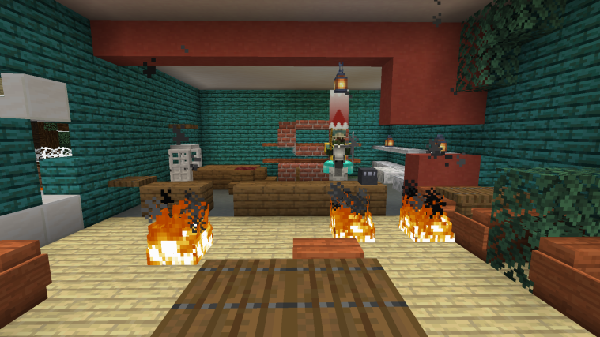
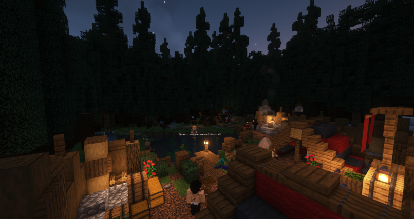
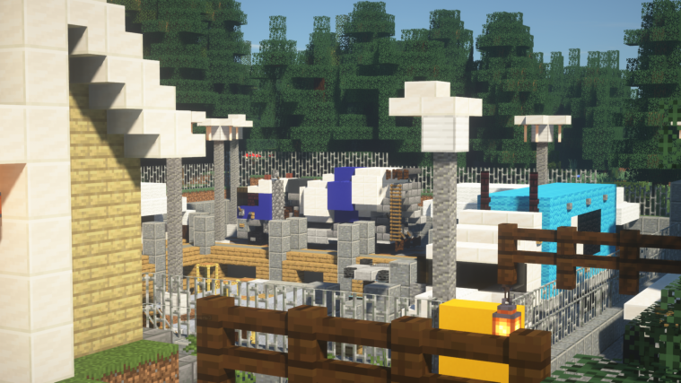
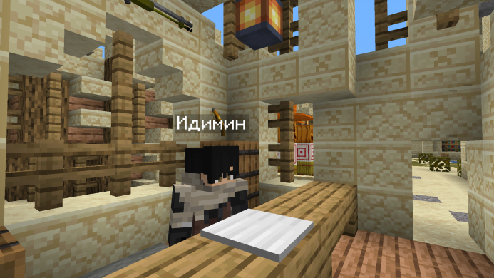

Наша индивидуальность
И всё же остаётся вопрос: «А что конкретно вас отличает от других полит-проектов?» Помимо слова «Потолот» в названии есть/будет много ещё чего интересного. Давайте перечислю некоторые особенности:
- Полное отсутствие команд, да бы склонить людей к взаимодействию с некоторыми элементами /t builds (!), с NPC, с блоками и т. д.
- NPC-города со своей историей, индивидуальными особенностями, системой репутации, квестами и т. д.
- Своя собственная система войн, сделанная таким образом, чтобы автоматизировать многие процессы, начиная с претензий, заканчивая захватом городов, и чтобы был баланс и интерес.
- Новая динамическая экономика, призванная сбалансировать цены и толкать людей к более тесной торговле и тесному взаимодействию.
- Переделанный Towny таким образом, что люди вынуждены будут вести политику с соседями, кооперироваться, воевать и прочее, чтобы содержать и расширять город.
(!) – у этого есть тоже своя особенность.
Правила сервера
Строго запрещается!
1. Разводить полит-срачи
2. Разжигание неигровых межнациональных/межэтнических конфликтов или их реальных аналогов
3. Кидать ссылки на сайты, файлы с шокирующим или запрещённым содержанием
4. Реклама сторонних проектов
5. Жёсткая травля над другим игроком
6. Мошенничество
7. Продажа внутриигровых услуг и аккаунтов за реальные деньги (RMT)
8. Использование стороннего ПО, который вмешивается в игровой процесс (Исключение: моды по типу Litematica)
9. Использование эксплойтов
10. Строить лаг-машины
11. Порча ландшафта на диких землях (уточнение: в своём городе, например, можно рыть огромный карьер до бедрока, но в диких землях – запрещено)
12. Гриферство внутри городов жителями этого же города или участниками нации этого города
13. Использовать названия городов, которые явно противоречат правилам сервера
14. Слать в личные сообщения игроков рекламу своего города
15. Создавать преднамеренную помеху игрокам
16. Намеренный обход правил
Не рекомендуется
1. Злоупотреблять ненормативной лексикой
2. Вести себя неадекватно/токсично
3. Оскорблять вне рамок игры
4. Обсуждать действий администрации в чате майнкрафта (для этого есть дискорд)
5. Злоупотреблять редстоуновыми таймерами (Исключение: классический таймер из двух повторителей, задержка у которых стоит 4 тика, однако, советуем использовать их как можно меньше)
Галерея :)




×